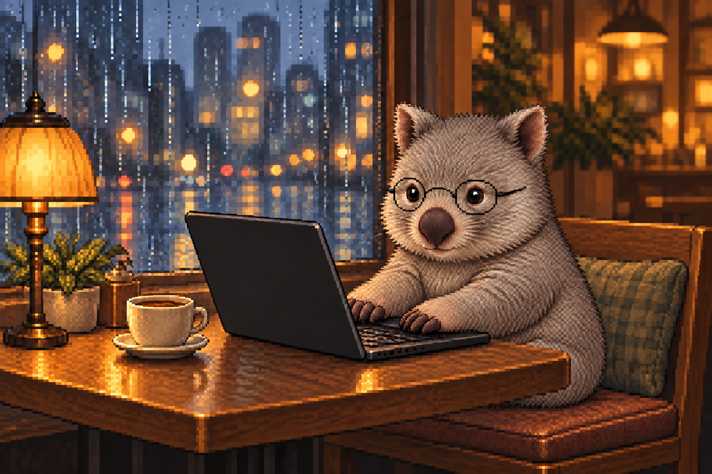
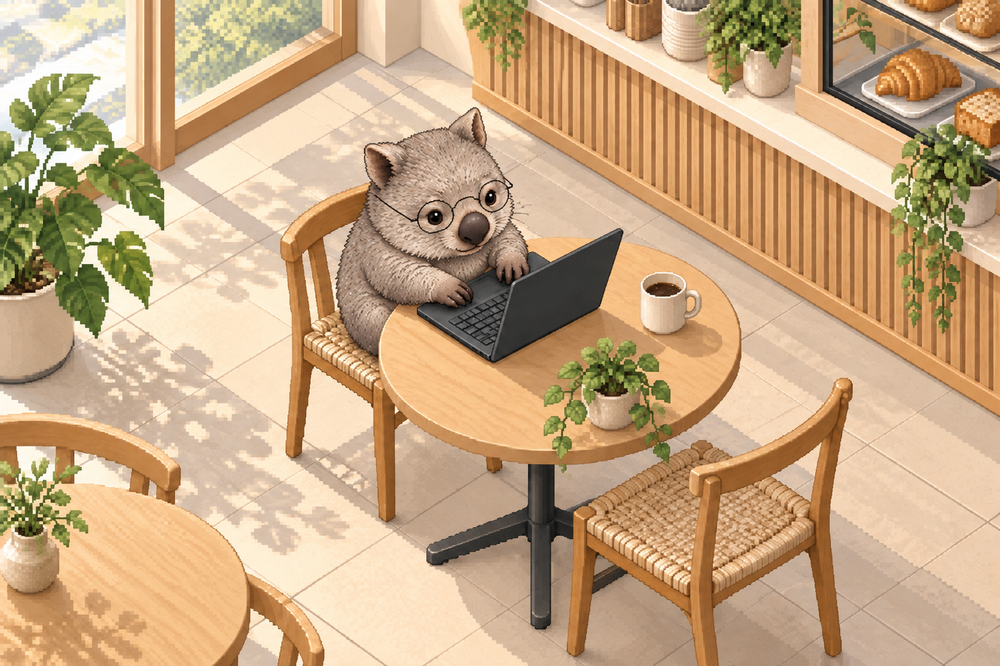
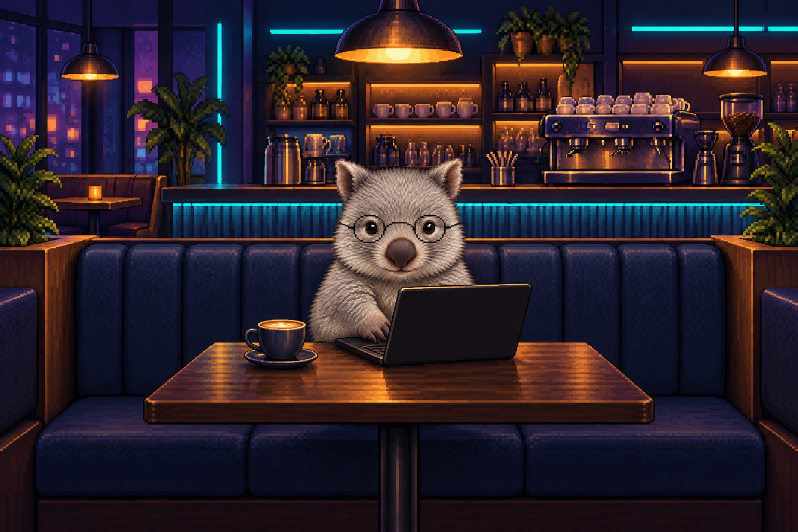
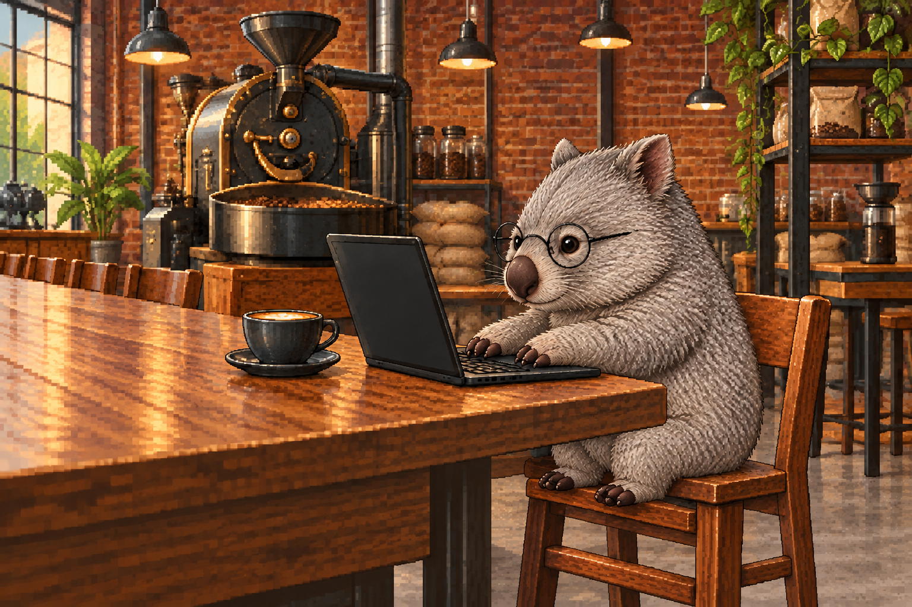
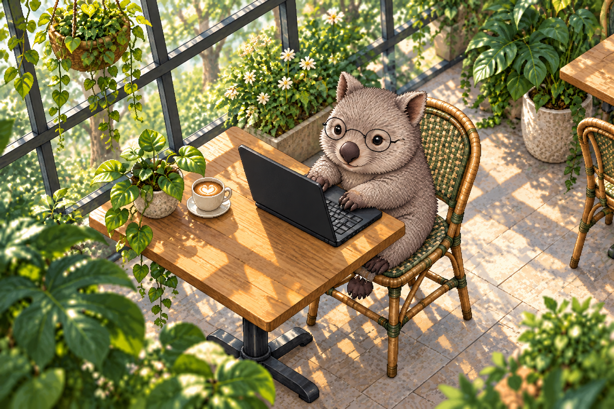
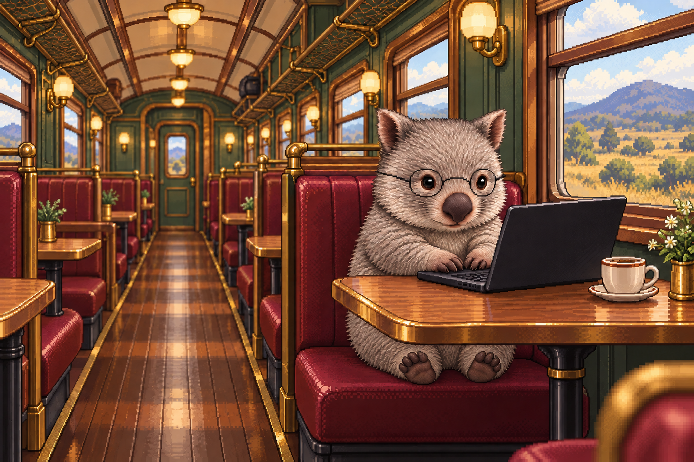
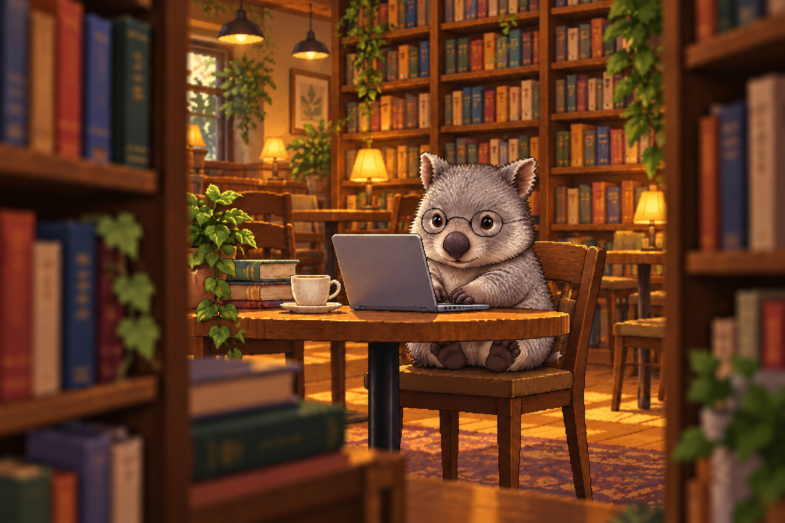
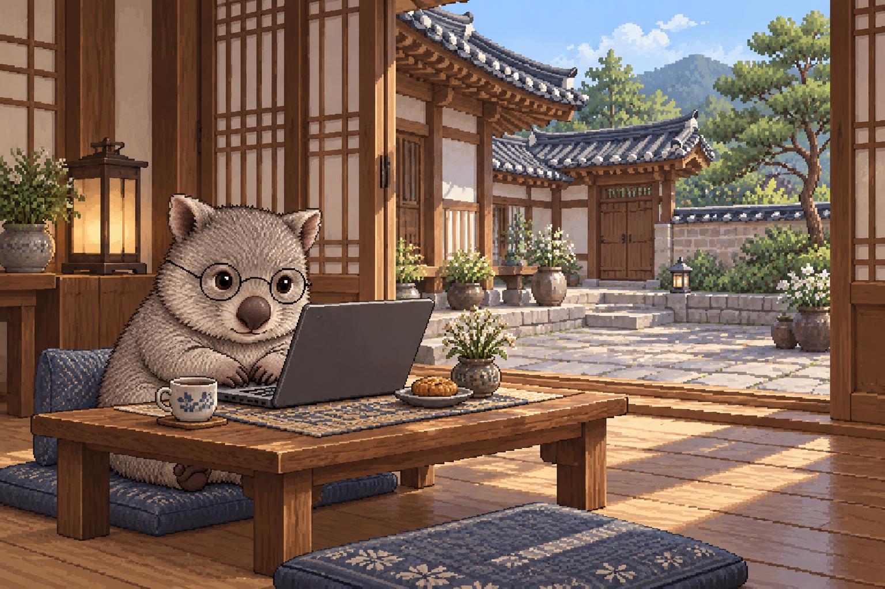
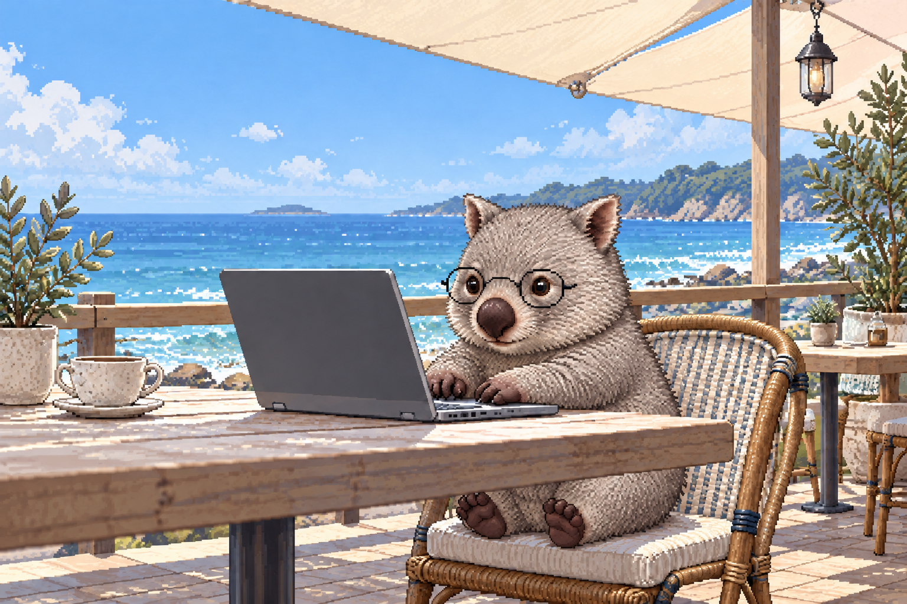
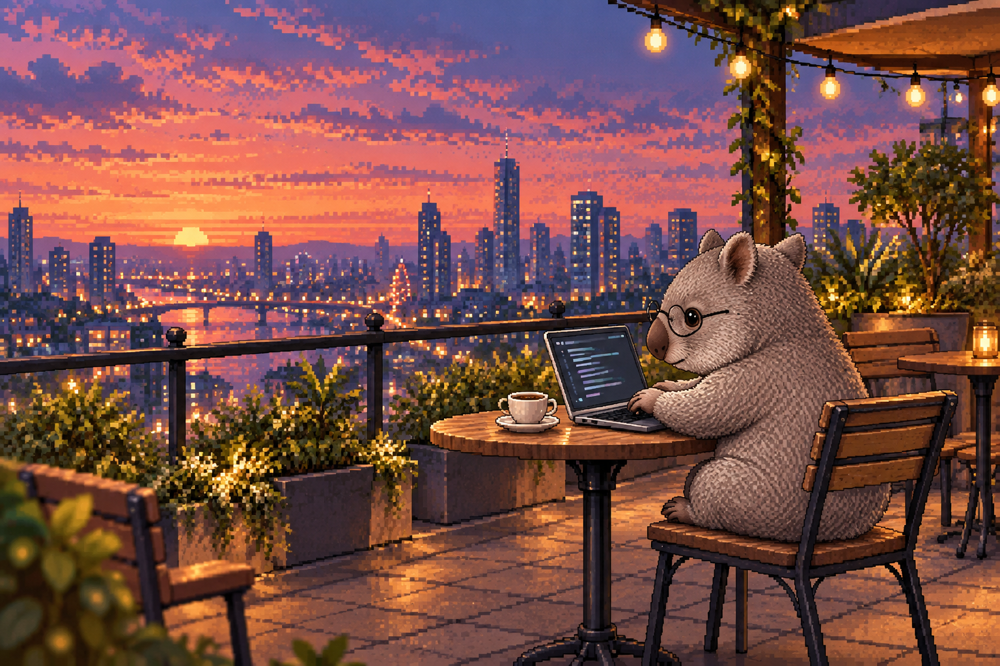

01비 오는 창가
비창가의 따뜻한 조명 · 눈높이 3/4 클로즈업
BABY WOMBAT / CAFE / LAPTOP / 01–10
같은 웜뱃, 서로 다른 열 곳의 카페. 안경과 회색 털, 픽셀 스타일을 유지하며 공간과 시점을 바꿨습니다. 이미지를 누르면 원본이 열립니다.

비창가의 따뜻한 조명 · 눈높이 3/4 클로즈업

크림색과 밝은 나무 · 높은 45도 아이소메트릭

남보라와 청록 조명 · 부스 좌석 정면 와이드

오래된 벽돌과 긴 나무 테이블 · 낮은 측면 와이드

유리 천창과 풍성한 식물 · 대각선 하이앵글

빈티지 객차와 창가 좌석 · 통로를 향한 1점 투시

책이 가득한 조용한 카페 · 책장을 통과하는 낮은 시점

열린 나무 문과 돌마당 · 낮은 테이블의 넓은 대각선 구도

바다 수평선과 햇빛 가림막 · 데크의 낮은 측면 구도

노을과 도시 스카이라인 · 넓은 후면 3/4 파노라마